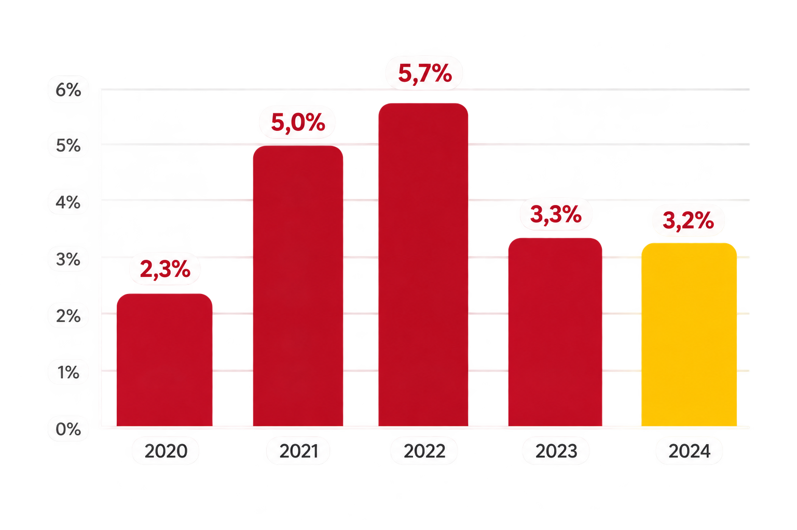

Educação de Qualidade
Garantir educação inclusiva, equitativa e de qualidade e oportunidades de aprendizagem para todos

Início
Metas
Brasil
Garantir educação inclusiva, equitativa e de qualidade e oportunidades de aprendizagem para todos
OQUE É
A ODS 4 faz parte da Agenda 2030 da ONU e busca assegurar educação inclusiva, equitativa e de qualidade, promovendo aprendizagem para todas as pessoas.
Aprender não tem idade, nem endereço
No Brasil
crianças jovens fora da escola
taxa de alfabetização
professores qualificados
acesso ao ensino superior
Evasão escolar (Exemplo)

Evasão escolar no ensino médio
Analfabetismo entre adultos
Acesso á internet para estudar
Ensine, reforce o estudo ou ajude ONGs locais.
Doe materiais para bibliotécas comunitárias.
Participe de campanhas e conselhos escolares.
Incentive jovens a voltar e concluir os estudos.
Fontes: ONU . Unesco . IBGE . INEP
Conheça as outras ODs ->
@2026 - Projeto sobre a ODS 4 - Educação de Qualidade
Início
Metas
Brasil
Ajude